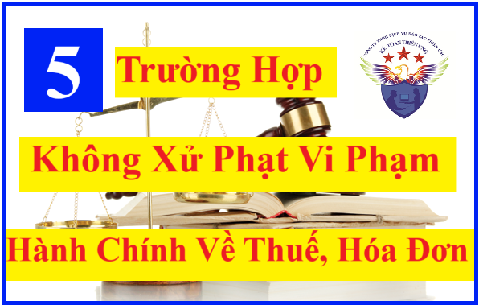

Những trường hợp không xử phạt vi phạm hành chính về thuế, hóa đơn theo quy định tại Nghị định 125/2020/NĐ-CP quy định xử phạt vi phạm hành chính về thuế, hóa đơn.
Theo quy định tại điều 9 của Nghị định 125/2020/NĐ-CP có 5 trường hợp không xử phạt vi phạm hành chính về thuế, hóa đơn
1. Không xử phạt vi phạm hành chính về thuế, hóa đơn đối với các trường hợp không xử phạt vi phạm hành chính theo quy định của pháp luật về xử lý vi phạm hành chính.
Người nộp thuế chậm thực hiện thủ tục thuế, hóa đơn bằng phương thức điện tử do sự cố kỹ thuật của hệ thống công nghệ thông tin được thông báo trên Cổng thông tin điện tử của cơ quan thuế thuộc trường hợp thực hiện hành vi vi phạm do sự kiện bất khả kháng quy định tại khoản 4 Điều 11 Luật Xử lý vi phạm hành chính.

Trong đó: khoản 4 Điều 11 Luật Xử lý vi phạm hành chính như sau:
Điều 11. Những trường hợp không xử phạt vi phạm hành chính
Không xử phạt vi phạm hành chính đối với các trường hợp sau đây:
...
4. Thực hiện hành vi vi phạm hành chính do sự kiện bất khả kháng;
2. Không xử phạt vi phạm hành chính về thuế, không tính tiền chậm nộp tiền thuế đối với người nộp thuế vi phạm hành chính về thuế do thực hiện theo văn bản hướng dẫn, quyết định xử lý của cơ quan thuế, cơ quan nhà nước có thẩm quyền liên quan đến nội dung xác định nghĩa vụ thuế của người nộp thuế (kể cả các văn bản hướng dẫn, quyết định xử lý được ban hành trước ngày Nghị định này có hiệu lực), trừ trường hợp thanh tra, kiểm tra thuế tại trụ sở người nộp thuế chưa phát hiện sai sót của người nộp thuế trong việc khai, xác định số tiền thuế phải nộp hoặc số tiền thuế được miễn, giảm, hoàn nhưng sau đó hành vi vi phạm hành chính về thuế của người nộp thuế bị phát hiện.
3. Không xử phạt vi phạm hành chính về thuế đối với trường hợp khai sai, người nộp thuế đã khai bổ sung hồ sơ khai thuế và đã tự giác nộp đủ số tiền thuế phải nộp trước thời điểm cơ quan thuế công bố quyết định kiểm tra thuế, thanh tra thuế tại trụ sở người nộp thuế hoặc trước thời điểm cơ quan thuế phát hiện không qua thanh tra, kiểm tra thuế tại trụ sở của người nộp thuế hoặc trước khi cơ quan có thẩm quyền khác phát hiện.
4. Không xử phạt hành vi vi phạm thủ tục thuế đối với cá nhân trực tiếp quyết toán thuế thu nhập cá nhân chậm nộp hồ sơ quyết toán thuế thu nhập cá nhân mà có phát sinh số tiền thuế được hoàn; hộ kinh doanh, cá nhân kinh doanh đã bị ấn định thuế theo quy định tại Điều 51 Luật Quản lý thuế.
Trong đó: Điều 51 Luật Quản lý thuế số: 38/2019/QH14 như sau:
Điều 51. Xác định mức thuế đối với hộ kinh doanh, cá nhân kinh doanh nộp thuế theo phương pháp khoán thuế
Trong đó: Điều 51 Luật Quản lý thuế số: 38/2019/QH14 như sau:
Điều 51. Xác định mức thuế đối với hộ kinh doanh, cá nhân kinh doanh nộp thuế theo phương pháp khoán thuế
1. Cơ quan thuế xác định số tiền thuế phải nộp theo phương pháp khoán thuế (sau đây gọi là mức thuế khoán) đối với trường hợp hộ kinh doanh, cá nhân kinh doanh không thực hiện hoặc thực hiện không đầy đủ chế độ kế toán, hóa đơn, chứng từ, trừ trường hợp quy định tại khoản 5 Điều này.
2. Cơ quan thuế căn cứ vào tài liệu kê khai của hộ kinh doanh, cá nhân kinh doanh, cơ sở dữ liệu của cơ quan thuế, ý kiến của Hội đồng tư vấn thuế xã, phường, thị trấn để xác định mức thuế khoán.
3. Mức thuế khoán được tính theo năm dương lịch hoặc theo tháng đối với trường hợp kinh doanh theo thời vụ. Mức thuế khoán phải được công khai trong địa bàn xã, phường, thị trấn. Trường hợp có thay đổi ngành, nghề, quy mô kinh doanh, ngừng, tạm ngừng kinh doanh, người nộp thuế phải khai báo với cơ quan thuế để điều chỉnh mức thuế khoán.
4. Bộ trưởng Bộ Tài chính quy định chi tiết căn cứ, trình tự để xác định mức thuế khoán đối với hộ kinh doanh, cá nhân kinh doanh.
5. Hộ kinh doanh, cá nhân kinh doanh có quy mô về doanh thu, lao động đáp ứng từ mức cao nhất về tiêu chí của doanh nghiệp siêu nhỏ theo quy định pháp luật về hỗ trợ doanh nghiệp nhỏ và vừa phải thực hiện chế độ kế toán và nộp thuế theo phương pháp kê khai.
5. Không xử phạt hành vi vi phạm về thời hạn nộp hồ sơ khai thuế trong thời gian người nộp thuế được gia hạn nộp hồ sơ khai thuế đó.